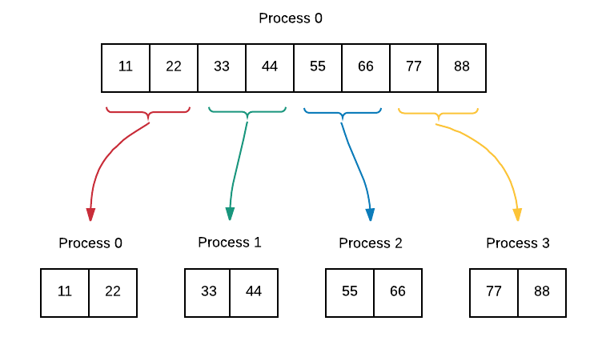

Collective Communication¶
With independent, often distributed processes, there is a need in many program situations to have all the processes communicating with each other, usually by sharing data, either before or after independent simultaneous computations that each process performs. Here we see simple examples of these collective communication patterns.
12. Collective Communication: Reduction¶
file: patternlets/MPI/12.reduction/reduction.c
Build inside 12.reduction directory:
make reduction
Execute on the command line inside 12.reduction directory:
mpirun -np <number of processes> ./reduction
Once processes have performed independent concurrent computations, possibly on some portion of decomposed data, it is quite common to then reduce those individual computations into one value. This example shows a simple calculation done by each process being reduced to a sum and a maximum. In this example, MPI, has built-in computations, indicated by MPI_SUM and MPI_MAX in the following code. With four processes, the code is implemented like this:

1 2 3 4 5 6 7 8 9 10 11 12 13 14 15 16 17 18 19 20 21 22 23 24 25 26 27 28 29 30 31 32 33 34 35 36 37 38 39 | /* reduction.c
* ... illustrates the use of MPI_Reduce()...
* Joel Adams, Calvin College, November 2009.
*
* Usage: mpirun -np N ./reduction
*
* Exercise:
* - Compile and run, varying N: 4, 6, 8, 10.
* - Explain behavior of MPI_Reduce().
*/
#include <mpi.h>
#include <stdio.h>
#include <stdlib.h>
int main(int argc, char** argv) {
int numProcs = -1, myRank = -1, square = -1, max = -1, sum = 0;
MPI_Init(&argc, &argv);
MPI_Comm_size(MPI_COMM_WORLD, &numProcs);
MPI_Comm_rank(MPI_COMM_WORLD, &myRank);
square = (myRank+1) * (myRank+1);
printf("Process %d computed %d\n", myRank, square);
MPI_Reduce(&square, &sum, 1, MPI_INT, MPI_SUM, 0, MPI_COMM_WORLD);
MPI_Reduce(&square, &max, 1, MPI_INT, MPI_MAX, 0, MPI_COMM_WORLD);
if (myRank == 0) {
printf("\nThe sum of the squares is %d\n\n", sum);
printf("The max of the squares is %d\n\n", max);
}
MPI_Finalize();
return 0;
}
|
13. Collective Communication: Reduction¶
file: patternlets/MPI/13.reduction2/reduction2.c
Build inside 13.reduction2 directory:
make reduction2
Execute on the command line inside 13.reduction2 directory:
mpirun -np <number of processes> ./reduction2
Here is a second reduction example using arrays of data.
To do:
Can you explain the reduction, MPI_reduce, in terms of srcArr and destArr?
1 2 3 4 5 6 7 8 9 10 11 12 13 14 15 16 17 18 19 20 21 22 23 24 25 26 27 28 29 30 31 32 33 34 35 36 37 38 39 40 41 42 43 44 45 46 47 48 49 50 51 52 53 54 55 56 57 58 59 60 61 62 63 64 65 66 67 68 69 | /* reduction2.c
* ... illustrates the use of MPI_Reduce() using arrays...
* Joel Adams, Calvin College, January 2015.
*
* Usage: mpirun -np 4 ./reduction2
*
* Exercise:
* - Compile and run, comparing output to source code.
* - Uncomment the 'commented out' call to printArray.
* - Save, recompile, rerun, comparing output to source code.
* - Explain behavior of MPI_Reduce() in terms of
* srcArr and destArr.
*/
#include <mpi.h>
#include <stdio.h>
#define ARRAY_SIZE 5
void printArray(int id, char* arrayName, int* array, int SIZE);
int main(int argc, char** argv) {
int myRank = -1;
int srcArr[ARRAY_SIZE] = {0};
int destArr[ARRAY_SIZE] = {0};
MPI_Init(&argc, &argv);
MPI_Comm_rank(MPI_COMM_WORLD, &myRank);
if (myRank == 0) {
printf("\nBefore reduction: ");
printArray(myRank, "destArr", destArr, ARRAY_SIZE);
}
for (unsigned i = 0; i < ARRAY_SIZE; i++) {
srcArr[i] = myRank * i;
}
printArray(myRank, "srcArr", srcArr, ARRAY_SIZE);
MPI_Reduce(srcArr, destArr, ARRAY_SIZE, MPI_INT, MPI_SUM, 0, MPI_COMM_WORLD);
if (myRank == 0) {
printf("\nAfter reduction: ");
printArray(myRank, "destArr", destArr, ARRAY_SIZE);
printf("\n");
}
MPI_Finalize();
return 0;
}
/* utility to display an array
* params: id, the rank of the current process
* arrayName, the name of the array being displayed
* array, the array being displayed
* SIZE, the number of items in array.
* postcondition:
* the id, name, and items in array have been printed to stdout.
*/
void printArray(int id, char* arrayName, int * array, int SIZE) {
printf("Process %d, %s: [", id, arrayName);
for (int i = 0; i < SIZE; i++) {
printf("%3d", array[i]);
if (i < SIZE-1) printf(",");
}
printf("]\n");
}
|
Further Exploration:
This useful MPI tutorial explains other reduction operations that can be performed. You could use the above code or the previous examples to experiment with some of these.
14. Collective communication: Scatter for message-passing data decomposition¶
file: patternlets/MPI/14.scatter/scatter.c
Build inside 14.scatter directory:
make scatter
Execute on the command line inside 14.scatter directory:
mpirun -np <number of processes> ./scatter
If processes can independently work on portions of a larger data array using the geometric data decomposition pattern, the scatter pattern can be used to ensure that each process receives a copy of its portion of the array. Process 0 gets the first chunk, process 1 gets the second chunk and so on until the entire array has been distributed.
To do:
What previous data decomposition pattern is this similar to?
1 2 3 4 5 6 7 8 9 10 11 12 13 14 15 16 17 18 19 20 21 22 23 24 25 26 27 28 29 30 31 32 33 34 35 36 37 38 39 40 41 42 43 44 45 46 47 48 49 50 51 52 53 54 55 56 57 58 | /* scatter.c
* ... illustrates the use of MPI_Scatter()...
* Joel Adams, Calvin College, November 2009.
*
* Usage: mpirun -np N ./scatter
*
* Exercise:
* - Compile and run, varying N: 1, 2, 4, 8
* - Trace execution through source code.
* - Explain behavior/effect of MPI_Scatter().
*/
#include <mpi.h> // MPI
#include <stdio.h> // printf(), etc.
#include <stdlib.h> // malloc()
void print(int id, char* arrName, int* arr, int arrSize);
int main(int argc, char** argv) {
const int MAX = 8;
int* arrSend = NULL;
int* arrRcv = NULL;
int numProcs = -1, myRank = -1, numSent = -1;
MPI_Init(&argc, &argv); // initialize
MPI_Comm_size(MPI_COMM_WORLD, &numProcs);
MPI_Comm_rank(MPI_COMM_WORLD, &myRank);
if (myRank == 0) { // master process:
arrSend = (int*) malloc( MAX * sizeof(int) ); // allocate array1
for (int i = 0; i < MAX; i++) { // load with values
arrSend[i] = (i+1) * 11;
}
print(myRank, "arrSend", arrSend, MAX); // display array1
}
numSent = MAX / numProcs; // all processes:
arrRcv = (int*) malloc( numSent * sizeof(int) ); // allocate array2
MPI_Scatter(arrSend, numSent, MPI_INT, arrRcv, // scatter array1
numSent, MPI_INT, 0, MPI_COMM_WORLD); // into array2
print(myRank, "arrRcv", arrRcv, numSent); // display array2
free(arrSend); // clean up
free(arrRcv);
MPI_Finalize();
return 0;
}
void print(int id, char* arrName, int* arr, int arrSize) {
printf("Process %d, %s: ", id, arrName);
for (int i = 0; i < arrSize; i++) {
printf(" %d", arr[i]);
}
printf("\n");
}
|
15. Collective communication: Gather for message-passing data decomposition¶
file: patternlets/MPI/15.gather/gather.c
Build inside 15.gather directory:
make gather
Execute on the command line inside 15.gather directory:
mpirun -np <number of processes> ./gather
If processes can independently work on portions of a larger data array using the geometric data decomposition pattern, the gather pattern can be used to ensure that each process sends a copy of its portion of the array back to the root, or master process. Thus, gather is the reverse of scatter. Here is the idea:

To do:
Find documentation for the MPI function MPI_Gather. Make sure that you know what each parameter is for. Why are the second and fourth parameters in our example both SIZE? Can you explain what this means in terms of MPI_Gather?
1 2 3 4 5 6 7 8 9 10 11 12 13 14 15 16 17 18 19 20 21 22 23 24 25 26 27 28 29 30 31 32 33 34 35 36 37 38 39 40 41 42 43 44 45 46 47 48 49 50 51 52 53 54 55 56 57 58 59 60 61 62 63 64 | /* gather.c
* ... illustrates the use of MPI_Gather()...
* Joel Adams, Calvin College, November 2009.
*
* Usage: mpirun -np N ./gather
*
* Exercise:
* - Compile and run, varying N: 1, 2, 4, 8.
* - Trace execution through source.
* - Explain behavior of MPI_Gather().
*/
#include <mpi.h> // MPI
#include <stdio.h> // printf()
#include <stdlib.h> // malloc()
void print(int id, char* arrName, int* arr, int arrSize);
#define SIZE 3
int main(int argc, char** argv) {
int computeArray[SIZE]; // array1
int* gatherArray = NULL; // array2
int numProcs = -1, myRank = -1,
totalGatheredVals = -1;
MPI_Init(&argc, &argv); // initialize
MPI_Comm_size(MPI_COMM_WORLD, &numProcs);
MPI_Comm_rank(MPI_COMM_WORLD, &myRank);
// all processes:
for (int i = 0; i < SIZE; i++) { // load array1 with
computeArray[i] = myRank * 10 + i; // 3 distinct values
}
print(myRank, "computeArray", computeArray, // show array1
SIZE);
if (myRank == 0) { // master:
totalGatheredVals = SIZE * numProcs; // allocate array2
gatherArray = (int*) malloc( totalGatheredVals * sizeof(int) );
}
MPI_Gather(computeArray, SIZE, MPI_INT, // gather array1 vals
gatherArray, SIZE, MPI_INT, // into array2
0, MPI_COMM_WORLD); // at master process
if (myRank == 0) { // master process:
print(myRank, "gatherArray", // show array2
gatherArray, totalGatheredVals);
free(gatherArray); // clean up
}
MPI_Finalize();
return 0;
}
void print(int id, char* arrName, int* arr, int arrSize) {
printf("Process %d, %s: ", id, arrName);
for (int i = 0; i < arrSize; i++) {
printf(" %d", arr[i]);
}
printf("\n");
}
|

{kind=link}